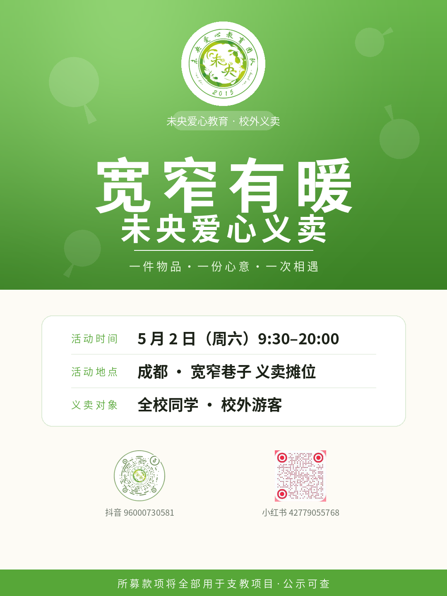
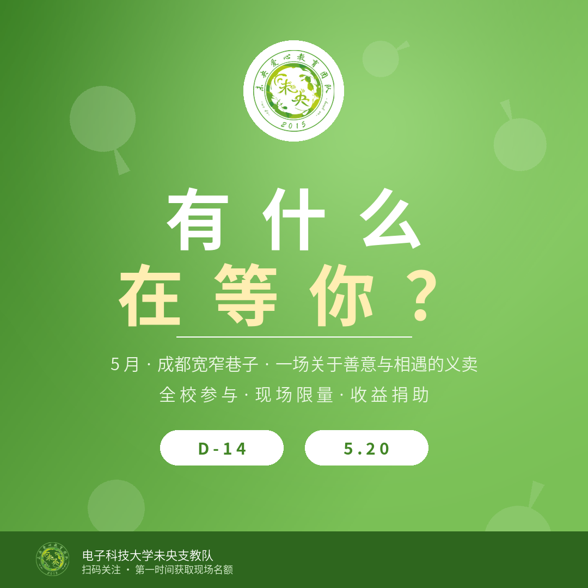
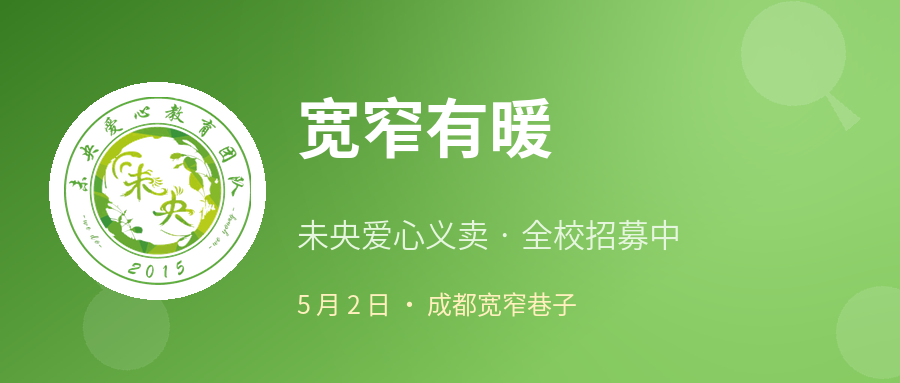
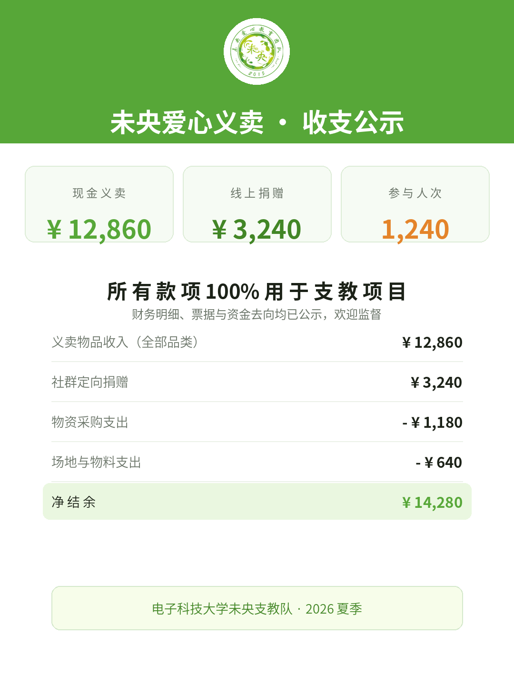
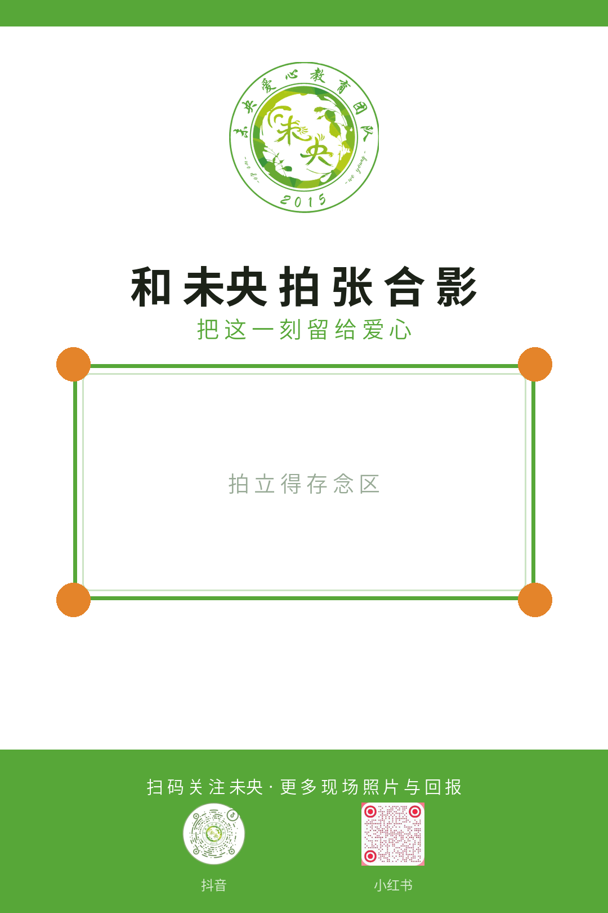
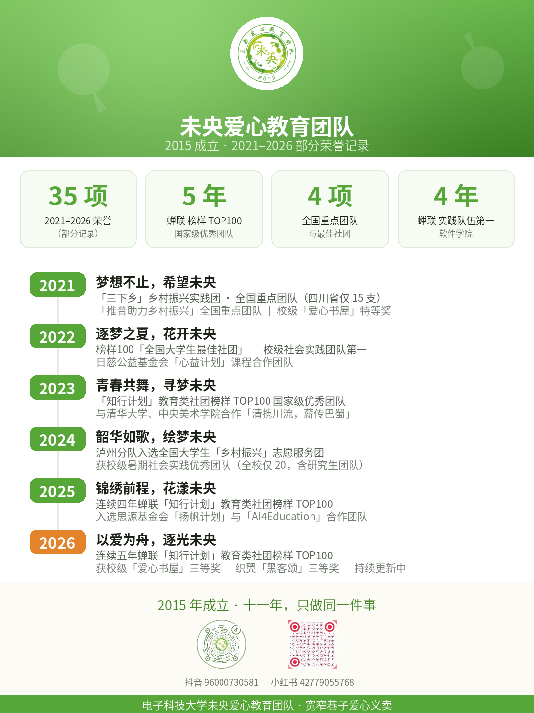

从悬念蓄水到收支公示，五阶段内容日历 + 6 人摄影组执行体系 + 6 张成品海报 + 四平台全流程文案库，一次性初始化完毕。
宣传组要解决的是三个独立的传播难题，不是笼统地"多发内容"。下面的每一个动作，都指向其中之一。
宽窄巷子官方平台提供的 1 次推文 + logo 使用授权，是整个活动里唯一不可再生的外部流量。所有平台、所有内容、所有节奏，都只为两件事服务：
1. 把那一天的人流导进我们的摊位 2. 把这一次的现场，变成能持续发很久的内容
围绕这两件事，其余都是执行。
义卖在宽窄巷子，对校外人群完全陌生。
对策：悬念期先造势（D-14 起），再用官方推文一次性引爆（D-3）。
"又是卖东西做公益"。口号对路人无效。
对策：不用口号，用具体的物品和场景——一本书、一个发圈、一张手写卡片。
怀疑是学生自嗨、怀疑钱说不清。
对策：四重确定性——官方推文授权 + 团委盖章 + 24h 内公示收支 + 35 项公开可查的团队荣誉。
前三条担保的是平台、流程和钱；第四条担保的是「你们是谁」——官方推文里不会出现我们的名字，这是它结构上补不了的洞。
| 平台 | 它负责讲什么 | 内容形式 | 优先级 |
|---|---|---|---|
| 小红书 42779055768 | 细节——那本书、那个发圈、那张手写卡片 | 图文 6–9 图 | P0 |
| 抖音 96000730581 | 过程——怎么摆的、人流多炸、巡游队进巷 | 15–30s 竖版 | P0 |
| 公众号 未央支教队 | 结论——招募、公示、复盘、钱花在了哪里 | 长图文 | P0 |
| 社群 / 朋友圈 | 转化——直接触达，零距离把人拉进群 | 图文 + 消息 | P0 |
| 宽窄巷子官方 | 背书与引流峰值 | 1 次推文（借力） | P0 |
| B站 / 校方 | 记录与沉淀，长尾复利 | 5–8min 记录片 | P1 |
以活动日 D-Day = 5 月 2 日为基准。完整版见《宣传方案.md》第三章；此处是执行视图。
小红书「我有一件想卖掉的旧物」起手 → 抖音「要摆摊了」建立画面 → 朋友圈预告 → 小红书「义卖卖什么」清单 → D-8 社群义卖队招新。
成败标准：D-8 时 45 人满员，且每个摊位有明确物品清单D-7 公众号主推文（招募）→ D-5 幕后准备 → D-4 提交官方素材包（队徽 PNG + 主视觉海报 + 活动信息 + 配文初稿）→ D-3 官方推文发布，2 小时内抖音、小红书、社群三线同步承接。
让刷到推文的人，在任何平台都能再次遇到我们朋友圈三版倒计时 → 小红书「带什么来」清单（物品 + 水 + 遮阳帽）→ 抖音「明天见」→ 社群明日出发公告（含集合点）→ 小红书「摊位准备就绪」。
9:00 布场 → 9:30 开摊 → 全天三班高峰连续跟拍 → 18:00 清仓冲刺 → 20:00 账目清点。当日发布节奏见《社媒文案库》。
D+1 公众号战报 + 收支公示（信任闭环）→ 小红书「卖光了」情绪峰值 → D+2 致谢篇（不卖东西）→ D+3 抖音 30s 混剪 → D+5 复盘 + B站记录片 → D+7「钱花在了哪里」深度闭环 → D+7 社群下一届意向登记。
长尾才是义卖宣传的真正价值统一主色 #57A738（取自队徽），已按各平台规格出图，可直接上传。

活动主 KV，所有平台的通用主图。
D-7 起 · 全平台通用
悬念期预热，含抖音码 + 小红书码双码引导。
D-14 · 公众号尾部
公众号封面 / B站封面。
D-7 · 公众号 / B站
活动后公示，配 D+1 战报发出。
D+1 · 信任闭环
现场合影区，UGC 引擎——路人合影是唯一能带来自然流量的素材。
D-Day · 现场物料
35 项可查证荣誉 + 6 年时间轴，信任背书——已嵌入公众号推文「我们是谁」一章。
D-7 起 · 预热与答疑素材/荣誉/ 内含 7 张原始照片：榜样 100 榜单发布、获奖名单公示、Movers4Climate 合作合影、荣誉证书、支教现场手工课、台上致辞、媒体推送截图。
用法：推文「我们是谁」章已嵌荣誉数据卡，「钱去哪了」章已嵌支教现场，「活动掠影」章横滚区已嵌榜单 + 公示 + 合影。剩余可作小红书笔记封面、答疑群图、现场证书摆拍、答辩佐证。
「把钱交给谁」是义卖最大的疑虑。宽窄巷子官方推文只能担保平台，不能担保我们。
荣誉墙提供的是可被第三方核验的履历：知行计划 TOP100 连续 5 年、榜样 100 全国大学生最佳社团、三下乡全国重点团队。比「我们是热心同学」有效一百倍。
素材/队徽.png 透明底 PNG，即 logo 使用授权文件。
素材/抖音码.png 抖音小程序码（已圆形裁切）。素材/小红书码.png 小红书二维码。
D-4 前备齐：队徽 PNG + 主视觉海报 + 活动信息 + 配文初稿，提交宽窄巷子方。
全部海报由 build_posters.py 直接绘制生成，改颜色、文案、尺寸后重跑即可，不用求人改图。
印刷物料/ —— 按印刷标准出图：海报 A2 竖版 426×600mm、公益展板 A3 横版 426×303mm、泡沫板立牌 606×906mm 展开图。
全部 3mm 出血、300dpi（立牌 200dpi），安全边距实测 ≥5mm，文字包围盒 0 处重叠。
立牌/印刷工艺说明.md 已写清：出血规则、CMYK 转换该交给印厂而不是自己转、满版绿做实地、总墨量 ≤300%、最小字号。
立牌展开图上的红色虚线是裁切线、蓝色虚线是出血线，请勿自行删图，告知印厂按线裁切。
现场照片就是这次活动的唯一内容来源。这 6 个人不是"拍照的"，而是 D-Day 到 D+7 所有平台内容的唯一生产者。完整分钟级脚本见《摄影组执行手册》。
活动负责人 + 关键镜头。空场全景、巷口人流对比、队伍合照。
产出：官方主视觉图、推文头图2 号桌固定位。物品近景、手部付钱特写、售罄战果对比。
产出：义卖过程、物品细节跟巡游义卖队。移动中的义卖场景、背影街拍，横竖双拍。
产出：抖音短视频主力打卡点。路人合影、队员合影、用户 UGC，需主动邀请路人。
产出：转发动机（自然流量）场地侧。物资堆叠、摊位全景、准备瞬间、撤场收尾。
产出：氛围与幕后感机动 + 数据。扫码记录、账本、捐赠者付款瞬间、钱箱清点。
产出：财务公示依据① 摄影组不承担义卖岗位，专注拍摄；② B 静 C 动，静态出小红书、动态出抖音，素材不重复；③ D 是转发动机，路人合影必须主动邀请。
17:30 前完成初剪并交付到共享文件夹；当晚 21:00 前全员认领剪辑任务；次日 交付成片——这是赶上 D+1 发布窗口的唯一保障。
竖 9:16 / 横 16:9 各拍一张不后期裁；主体上下留 10% 空间；顺光不逆光；带出队徽强化品牌；拍路人先征得同意（硬性纪律）。
四平台全流程文案，逐条可发，不需要再从零想。
小红书 7 篇 + 抖音 8 条 + 公众号 3 篇 + 朋友圈 3 版 + 社群模板，覆盖悬念期 / 引爆期 / 催场期 / 当天 / 长尾五个阶段。
附话题标签库与8 条发布纪律（含发布时段、图文张数、@ 规则、不刷赞不注水等）。
策划案正文，直接复用队方模板样式（字号/行距/页边距全部继承）。
五个二级节：宣传目标 / 渠道与分工 / 传播节奏 / 现场联动 / 物料与风险，正文共 11 个三级标题。
post/index.html —— 可一键复制粘贴进公众号后台。
五章节：未央爱心义卖 / 卖什么 / 钱去哪了 / 我们是谁 / 活动掠影。模块直接取自参考推文的真实 DOM——灯笼红条章节标、金框奶白卡、红标签、棕标签带三角箭头、橙框红字卡、横向滚动往期回顾、编辑｜初审｜复审｜终审页脚，全部行内样式。
八章完整版：战略 / 传播问题 / 渠道矩阵 / 内容日历 / 物料清单 / 摄影组 / KPI 与复盘 / 风险预案 / 我们不做的事。
附交付物索引树，可直接作为策划案附件。
下载 Word 稿（1.35 页） · 查看完整 Markdown
每一阶段都有可查证的目标数字，避免"感觉还不错"式复盘。
| 阶段 | 平台 | 指标 | 目标 |
|---|---|---|---|
| 预热 | 小红书 | 笔记阅读 | 单篇 ≥ 500 |
| 预热 | 全渠道 | 队伍满员率 | 45 / 45 |
| 引爆 | 公众号 | 主推文阅读 | ≥ 800 |
| 引爆 | 官方推文 | 阅读 / 互动 | 达到官方推文历史均值 |
| 引爆 | 社群 | 进群人数 | ≥ 120 |
| 当天 | 抖音 | 单条播放 | ≥ 1000 |
| 当天 | 小红书 | 现场笔记互动 | ≥ 60 赞 |
| 当天 | 线下 | 现场触达人次 | ≥ 800 |
| 长尾 | 公众号 | 战报阅读 | ≥ 600 |
| 长尾 | 全渠道 | 涨粉 | +150 |
等级 高。D-4 提交后 24h 无回复即启动 B 案：改用校方公众号 + 本地媒体投稿。文案库已备 B 案通稿。
等级 高。降级方案：缩至 2 组共 28 人，摊位缩至 1 张桌，巡游队扩编。
等级 高。顺延至下一周末，社群统一通知，已报名人员不受影响。摄影组改拍室内素材。
从今天（初始化）到活动日，按这三步推进。
weiyang-yimai-2026/index.html → 点底部「一键复制」→ 粘贴到公众号后台 → 上传 assets/cover.png 作封面。D-4 前把队徽 PNG + 主视觉海报 + 活动信息 + 配文初稿提交宽窄巷子方。